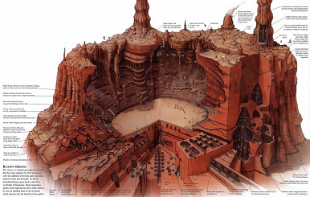
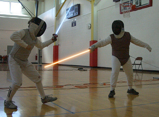
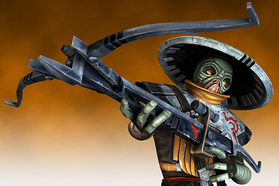
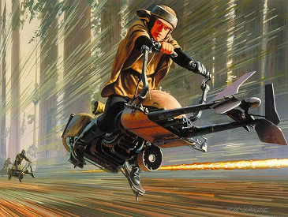
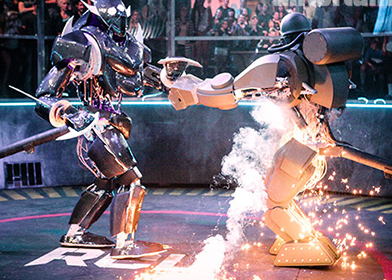
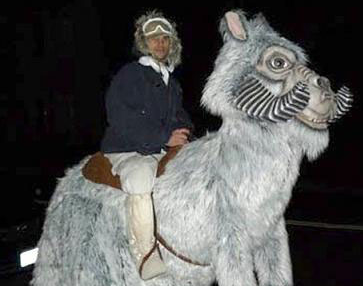

Sports Complex (Future):
Evaluation Criteria:
- It must be exciting for the non-participants.
- It must be safe for both participants and non-participants.
- It must be suspenseful.
Concept:
- My plan for a sports complex is set in the future. In the future, hopefully more technology that is used in the Star Wars universe will be readily available, such as holograms, lightsabers, droids, and more. I would like to create a sports complex that is basically an entire olympic arena for the Jedi Olympics. It will house fields, rings, and other areas to accomodate several types of sports and competive games.

- Petranaki Arena: One of the largest sections will be the Petranaki arena, which will resemble the arena by the same name on the planet Geonosis. The arena will revolve around events such as gladitorial combat, where individuals (mostly Jedi) will face off against an army of droids. The battles will be challenging but will be meant to be entertaining due to the violence being against non-living things, or droids. The arena will be surrounded by thousands of seats for spectators to watch.

- Lightsaber Fencing: The classic sport of fencing with a twist - lightsabers. Opponents will face off as they usually do, wearing protective armor against fatal lightsaber slashes and stabs, testing their swordsmanship skills against one another. The ring will otherwise be a fairly standard ring, just with an unbiased droid referee. This area will be much smaller compared to the main Petranaki Arena, and will hold only a couple hundred spectators.

- Bowcaster Archery: Archery will now be done with bowcasters instead of typical longbows and shortbows. Bowcasters are basically crossbows that fire metal bolts enveloped in energy. The archery section will be outdoors, and will feature several "lanes" for competitors to fire down at various targets. The shooting and spectating area will be mostly grass, surrounded by trees to help make it quiet from the surrounding sports that may be going on at the same time. Spectators will only be able to watch from behind the shooters and to the sides, not behind the targets from safety reasons.

- Speederbike Racing: Speederbike racing will be somewhat of a mix between motorcycle racing and cycling with bikes. Races will be held on a couple of different tracks, including a paved, standard 3-turn track, as well as a much curvier, dirt racetrack. The racers will each have a sponsored bike and race for a certain amount of laps, depending on the race taking place and the class of people competing. Spectators will be able to enjoy the view from stadium seating around about a third of each track.

- Battle Droids: Droids will be able to face off in arenas, or be pitted against each other. Battles will be done in various classes based on weight and level of artificial intelligence. Some droids may have no AI, and may be controlled completely by humans with remote controls. Others may have their own AI and can fight completely on their own. Droids ranking with similar AI will fight against each other to make the fights more fair. Droids will also be ranked on weight classes, so smaller lightweight droids don't have to fight in an unfair battle against a giant. The robot arena will be encased in fencing and plexiglass, protecting the spectators just beyond it. Seating will surround the battle pit entirely, and some VIP guests will be allowed to stand right next to the battle taking place.

- Tauntaun Polo: Polo will be played on tauntauns instead of horses. Tauntauns can be ridden with a saddle and reigns just like horses. Regardless of climate, tauntauns are also the preferred mount by many for being reliable and easy to train. All players will use tauntauns instead of having various creatures to make it more fair.